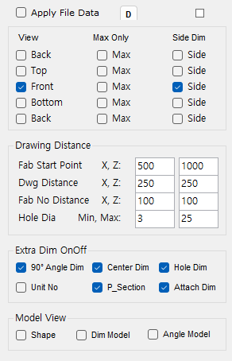
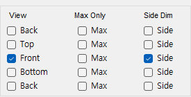
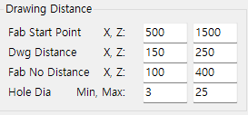
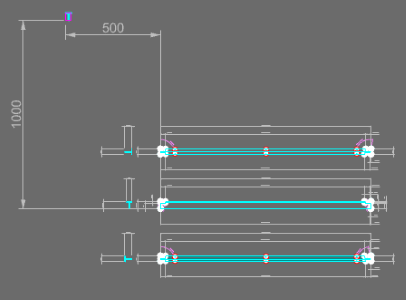
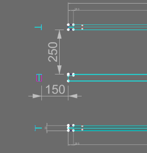
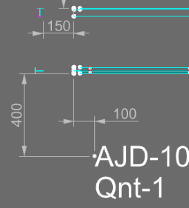
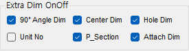
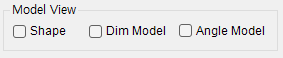

DdOpt
DdOpt is the Drawing Option panel for setting View and dimension generation methods before exporting FDDS fabrication drawings after modeling.
DdOpt in the Rhino command line and press Enter.FDwg to generate Frame fabrication drawings based on the current settings.
| Item | Description |
|---|---|
| Main Command | Specifies View, distance, dimension, and auxiliary model display options when creating FDDS fabrication drawings. |
| Save Current Selection as Default | The small D button at the top of the panel. Saves the current panel settings as the default to System_Default.dat. |
| Panel Behavior | Running DdOpt opens the Drawing Option Dockable Panel. On open, saved defaults are automatically loaded. |
The small D button at the top of the panel. Clicking it saves all current panel option values (Group 1–4) as the default to System_Default.dat. The full path is printed to the command line when it saves.
| Action | Description |
|---|---|
| Button click (save) | Saves the current panel values as the default. The D button turns blue to confirm the save. |
| On value change | If any checkbox or input value is changed after saving, the D button returns to its normal color. |
| On panel open | If saved defaults exist, they are automatically loaded and applied to each item. |
| Save file | System_Default.dat is a per-installation file stored alongside other feature settings such as FabList (values do not overwrite each other). |
Apply File Data checkbox is no longer used. File data application is now handled by FDstyle (Record/Playback); if no recorded data exists, the current panel values are used.
| Item | Description |
|---|---|
| View Column | Selects which directions to generate: Back, Top, Front, Bottom, Back-series Views. |
| Max Only | Shows only overall maximum dimensions for that View. |
| Side Dim | Shows left/right Side Dimensions in detail or only at Max level. |

| Item | Description |
|---|---|
| Fab Start Point | Reference start position for the fabrication drawing (X, Z values). |
| Dwg Distance | X = distance between left Section and main drawing; Z = distance between upper/lower drawings. |
| Fab No Distance | X and Z distances from the last drawing's lower-left corner for Fab No text. |
| Hole Dia | Min/Max Hole Dia range to annotate in the fabrication drawing. |




| Item | Description |
|---|---|
| 90° Angle Dim | Switches the 90 degree angles only on and off. On writes every angle, right angles included; off leaves out only the 90s while 45 degrees and the rest are still written - a bevel angle is a value the drawing has to state. [F] angles follow the same rule, so only [F]90 is left out. See the FDwg and FDDS pages for the full rule. |
| Center Dim | Annotates dimensions between Center Lines when present. |
| Hole Dim | Shows hole and slot dimensions. (formerly Cutting Dim) |
| Unit No | Displays Unit No information in the fabrication drawing. |
| Attach Dim | When an Attach Profile such as a Bracket is present, creates Dim Points from the left/right maxima of the Attach and draws the dimensions. |
| P_Section | Shows the section line - creates a separator line between the left Section and the main drawing. (formerly SectionLine) |

| Item | Description |
|---|---|
| Shape Model | Keeps the original Shape 3D model visible with the 2D drawing. |
| Dim Model | Keeps the dimension-calculation 3D model visible. |
| Angle Model | Keeps the angle-calculation 3D model visible. |
| Command | Description |
|---|---|
FDwg | Generates Frame fabrication drawings using DdOpt settings. |